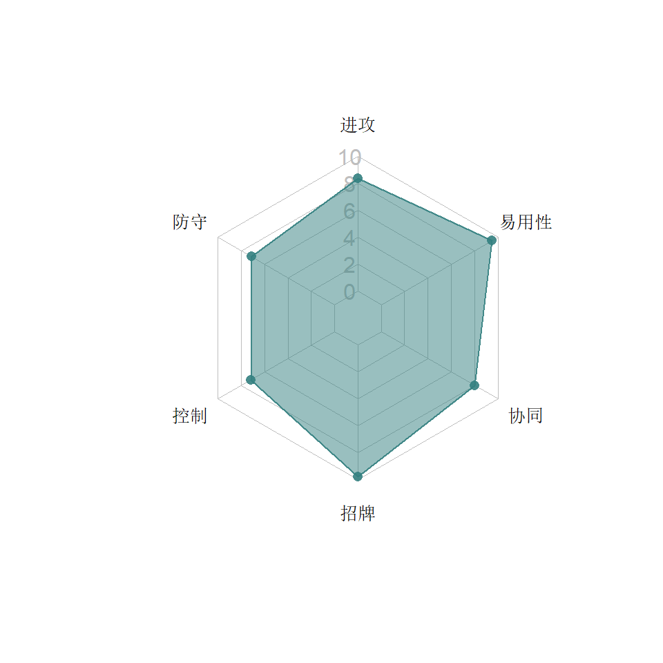
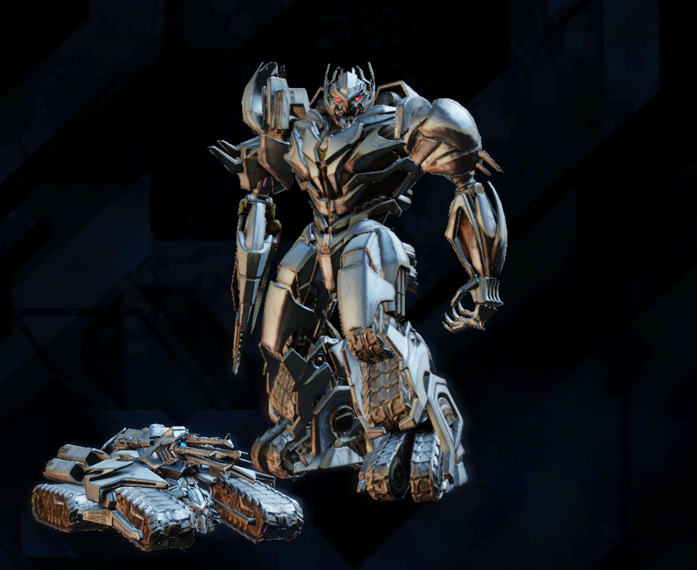
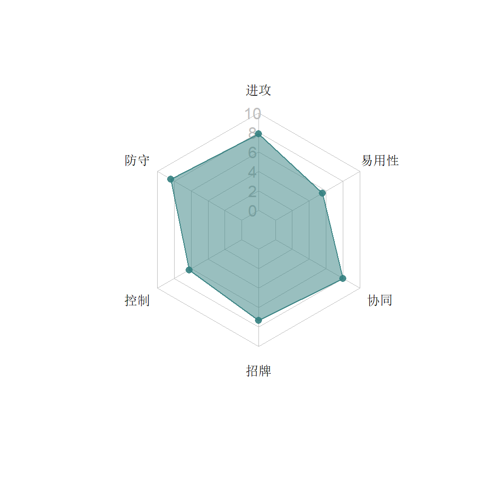
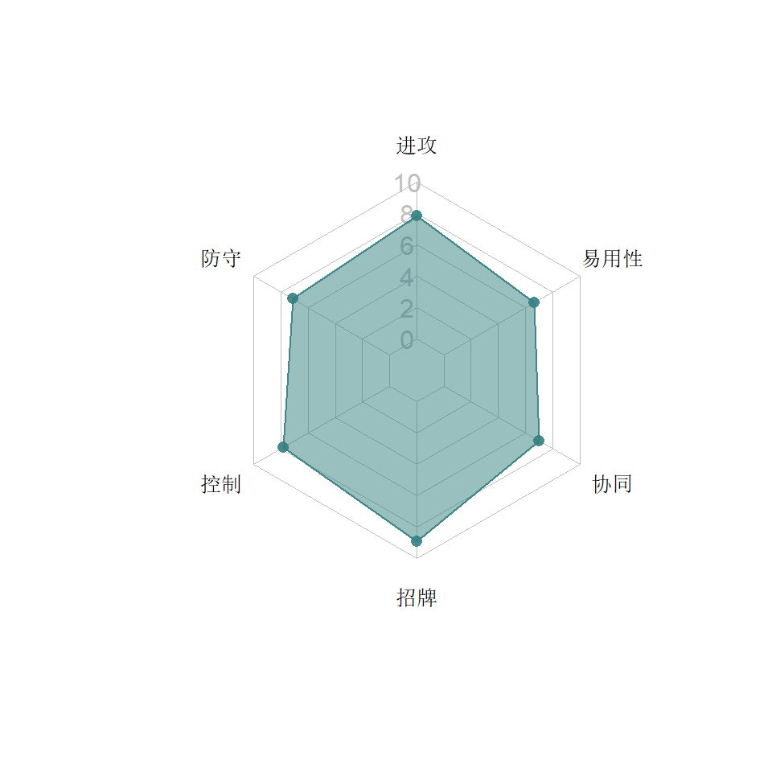

8  爆破系
爆破系
爆破系机器人从设计上说都是依靠特殊技进行爆发伤害的好手，但随着时间的推移和震天尊极大地影响了平衡，爆破系其他角色几乎成了小透明，类别综合水平沦为垫底。
类别关键字：特殊伤害，燃烧，远程，眩晕，减抗性，神
8.1 电影铁皮

8.1.1 特点分析
由于爆破系初期只有两人，搅拌者又拿不出手，铁皮凭借其连晕和高爆发招牌迅速成为了爆破的领军人物。
在2022年G1铁皮发布后，爆破铁皮也需要用“电影铁皮”来加以区别了。
8.1.1.1 能力
- 重击高概率燃烧，向被燃烧的对手再次施加燃烧会得到额外层数，让铁皮几发重击就能迅速堆积高燃烧，这种安逸的打法让铁皮输出稳定，可以轻松穿透护甲和抗性，除了100%抗暴的猩猩，带被动净化的钢锁，几乎都能打。
- 铁皮受到攻击时还有概率获得暴击伤害加成。铁皮是标准的近战0暴击，只要不是额外开启了提升暴击率的精通或者带了侦查的领袖协同，铁皮打碎骨魔是绝对不被反伤的。
- S1（感觉走运）有80%的概率打晕2.5秒（注意：因为铁皮收招动作慢，这2.5秒无法点5枪！），这让铁皮在未觉醒时也拥有高伤害的手段，在对方不慎打红自己又没有S2的绝境也可以搏一搏S1双晕来解决战斗。走到盟战三厅1或3线后，铁皮点五枪打五拳反复获得S1其实是相当肆虐的。
- S2（打破僵持）自带暴击伤害提升，并施加燃烧，输出惊人。
- S3（全金属军械库）的输出恐怖，一发入魂。
8.2 搅拌者
8.2.1 特点分析
搅拌者是游戏中最早的爆破机器人，也是最“扶不起的阿斗”。虽然经历过彻底改造，百炼为战最恶毒的祝福依然莫过于“祝你搅拌早日满觉醒”。
8.2.1.1 能力
- 每5秒获得一层特殊伤害加成，最大6层。6层后每5秒获得一层暴击伤害加成，最大6层。特殊技成功命中时消耗所有加成，搅拌者带着12层加成打人还是很伤的。
- 远程小枪前两发是手雷，有概率施加酸液（搅拌者专属DOT），并每秒驱散一个抗性加成，应该是对标通天晓的，但驱散得太慢，根本赶不上通天晓获得抗性的速度。施加DOT后所有攻击加50%暴击率。
- S1（后患无穷）无效果。S2（混合）杀伤力大，并有60%概率施加6秒燃烧。S3（着手毁坏）杀伤力更大，70%概率燃烧，一桶酸浇下去100%概率施加酸液。但S3的效果需要在第一发打出燃烧或者之前用手雷施加酸液才能高概率触发暴击，否则那6层暴击伤害是没有效果。所以搅拌者的S2和S3都比较看脸。
8.2.1.2 招牌
震荡格挡：搅拌者觉醒之后根据剩余血量最大可以减少40%防御伤害，并且获得独门绝技震荡格挡，可以在及时防御的过程中弹开对手造成伤害，并马上获得一个特殊或暴击加成。可惜弹开后第一不能追打，第二自己依然会吃到防御伤害，加上这个游戏不鼓励防御，搅拌者的操作方式的确有些另类。
8.3 黄蜂勇士
8.3.1 特点分析
爆破的独家机器人较多，黄蜂勇士（以下简称黄蜂）也不例外，凭借自己在远程战中的优势和神奇的复活技能，得到了不少玩家的青睐。
8.3.1.1 能力
- 50%血以下提升射速50%直至本局结束，搭配勇气和狙击手精通，黄蜂在半血以下的小枪命中和重击放风筝效果非常好。
- 25%血以下获得特殊伤害15~29%直至本局结束，便于绝地大反扑。
- 远程攻击命中后延时造成20~28%的抗性减益。这短暂的延时正好保证了黄蜂两枪点中上去打一套再连大招的时候，对方正好处于抗性降低的状态，加大伤害。
- 重击命中100%施加抗性减益并且100%驱散一个抗性增益。对付通天晓其实并没有太大效果，因为对方身上抗性很多，不过对付循环抵抗倒是有奇效。
- S1（雷射眼）是少数飞全屏的技能，无论是否命中都有45%的概率获得类似阿尔茜的精准增益，提升暴击率的同时降低对方规避概率30%，持续4秒。30%的概率治不了路障的倒地起身，也略低于小黄蜂（32%）和横炮（38%），但对大黄蜂是完全能控住的。
- S2（不稳定叮刺）施加抗性减益，打出高伤害。
- S3（核惊喜）伤害很高，动作搞笑，并且还附加燃烧，实在要面对纳米千的时候还是有破盾能力的。
8.3.1.2 招牌
不死鸟黄蜂勇士！：被打死能复活，清除所有伤害减益，并回血一定比例。由于任何招数都不能一次打死黄蜂，所以黄蜂也成了手残党的福音。通过特殊伤害与放风筝，再有招牌做保，黄蜂可以在残血状态打出高伤害。并且由于盟战超时只扣一半血，对方则保留超时时的血量，很多人利用这个“黄蜂暂停大法”挑战高难度盟战，直到被投诉过多，官方把一局调整为一个小时，才有所缓解。但无论如何，黄蜂在被击倒地复活回完血后暂停强退依然是规则允许范围的占便宜操作。即便不这样，一个单体复活对黄蜂来说也是很实惠的。
8.4 爆威


8.4.1 特点分析
爆威作为Boss级人物，在故事中凭借凶悍的不可阻挡震慑了玩家，盟战中也曾经一直是关底。而真正发布后，在玩家手上的使用场合偏少。
8.4.1.1 能力
- 削弱充能。普通攻击一次施加一层并提高5%的重击暴击率，由于爆威的基础暴击是0，所以充到20层来一发就肯定暴击了（除非碰到猩猩和碾碎器）。其实从英文来看，这个翻译是错误地理解了charge这个词，应该是电荷的意思，因为积累的电荷在瞬间放电时容易造成伤害，相信大家冬天脱毛衣时都有体会。所以建议的翻译是“伤害电荷”。可以说爆威这种先上“狗皮膏药”后一次触发的特点有点像是“零存整取”，这也使他成为了瞬间高伤害的鲜明代表。
- 霸体：在80%, 60%, 40%血量的时候触发霸体，霸体过程重击不中则加攻。这个特性对玩家作用不大，无法有效利用，也让电脑爆威的行动十分容易预测。
- S1（压制）乏善可陈，主要用来短战斗快速累计电荷。
- S2（和平与暴政）受益于远程提升，伤害巨大，实战中闪躲要注意好节奏，后面三炮最好交替用上下侧闪的方式来躲，以免卡在板边闪不动。
- S3（黑暗赦免）自动生成20个电荷，并且一次性消耗掉所有电荷，打出极高的伤害。
8.4.1.2 招牌
威震天万岁！：血量低于10%时触发回血（5觉醒回15.8%，100觉醒回30.2%），在10%之前被一次打死不会触发，回血时长为三秒，回血过程不像黄蜂是完全无敌，所以还是可能被打死。爆威天然拥有10%护甲，加上血量超长（仅次于斗士和天尊，排名第8），再搭配这种按比例回血的招牌，实际血槽特别长。而高觉醒的爆威在漫长的盟战中也相当于是每场自带一个急救箱，死了只需要小药复活。
8.5 喷气机

8.5.1 特点分析
喷气机的出现让爆破系迎来了一个近战型选手，不过即使5.1版在燃烧和晕点能力有加强，玩家依然普遍认为喷气机很差。
8.5.1.1 能力
- 喷气机像爆威一样自带10%护甲，血量排名在爆破仅次于震天尊和爆威，全人物第12，总的来说是很皮实的。
- 重击过程自带不可阻挡，并且击中燃烧的对手必晕3秒，这让喷气机施加眩晕的能力超强。
- S1（导弹齐发）高概率燃烧，S2（火箭爆破）必然燃烧且高概率晕3.5秒，但是由于对手中招后一时半会起不来，喷气机虽然在收招后马上冲上去狂按近战可以打两套，但是前面两下都是挥空的，跟点5枪比差别不大。
- S3（潜水炸弹）晕对手4秒自晕1秒，虽然搞笑，醒过来的喷气机还是可以安逸地点上5枪再上去打。同时还在30秒内降低对手25%的抗性。
8.5.1.2 招牌
冲力：每次重击有50%的概率叠加永久的特殊伤害，每层叠加到的伤害提升5%的概率，最多10层。如果不是近战重击命中不高，喷气机堆伤害还是很容易的。另外一个特性是让喷气机自己醒晕的速度逐渐加快。这依然是用来搞笑的功能，因为S3过后喷气机已然有3秒的时间优势了。
8.6 惊破天
8.6.1 特点分析
惊破天的发布拉开了特殊任务的序幕，作为第一个可以用人物币购买的机器人，惊破天最初的实力与他的身份并不相称，后期经过调整，大幅度加强。
8.6.1.1 能力
- 远程站防给自己充黑暗能量，30个充满，未充满会迅速丢失。充能的时候防御伤害降低，有时情愿硬扛子弹把它充满。每层充能都提高一定的远程伤害，30层最高+150%。
- 有黑暗能量时，重击有概率触发黑暗燃烧，造成额外伤害，30层有30%的概率。
- 近战连击最后一击加50%暴击率，每层黑暗能量加2%暴击伤害
- S1（粒子加速）打中后，每层黑暗能量加2%晕点概率，晕2.5秒
- S2（黑暗能量爆炸）打中后，30层有60%的概率消耗所有黑暗能量施加黑暗燃烧。在5.1的最重要加强就是S2会中止并刷新黑暗能量的倒计时，这样确保了S2的额外伤害。并且，也许是bug，也许是有意，刷新倒计时还可能让惊破天S2后再有概率触发招牌。
- S3（惊破枪过载）自动生成30个黑暗充能并且100%触发黑暗燃烧。最好先充满30个然后马上放S3，虽然不影响黑暗燃烧的强度，但是总共60层黑暗能量可以进一步提升最后一击的远程伤害。
8.7 震天尊
8.7.1 特点分析
出乎大家的意料，Kabam居然把《天元之力》动画里面的震天尊直接拿来发布了，而震天尊也没有辜负“神”的称号，迅速凭借全面的能力站到了游戏第一人的位置。
当初震天尊发布的时候，机器人币还是当月攒当月用下月失效变黄金，不像后来的通用币可以跨月连续攒。要在一个月“肝”出100万天尊币是相当难的，笔者嫌累，没有狂肝突袭周，于是也与震天尊失之交臂。这之后官方也意识到了震天尊的实力，一直不再给玩家机会获取震天尊。最终震天尊和亡灵天尊一同以24万的价格上架到泰坦货币商店，一般玩家探索故事最后一章再打一阵子盟战都可以最终请到真神震天尊。
8.7.1.1 能力
- 震天尊的加气全自动，与攻击和挨打无关，并且实际速度比标称值每秒1.2%要快，因为16秒就能充满一格，而不是27.75秒。这也让玩家迅速发现震天尊配机器人资源模块（“气天尊”）在突袭防御中非常让人头疼。
- 遗迹切换：震天尊以狂怒遗迹开局，之后每充满一格气切换一次遗迹n
- 狂怒遗迹（黄球）：震天尊加攻30~50%，并且对方格挡熟练度降低20%，这个状态是震天尊用于输出的状态
- 保存遗迹（蓝球）：震天尊的伤害抗性提升40~50%，并且对方单次伤害最大只能砍掉震天尊总血量的20%。
- 不朽遗迹（白球）在体力降到10%以下时触发，触发后阻止一切伤害8秒，这里“一切伤害”真的是一切伤害，普攻，DOT，反伤，逆火都不能让震天尊在8秒内有一丝血量的减少，妥妥的就是无敌。虽然震天尊有回血能力，但是白球每回合只能触发一次。
- 重击100%出黑暗燃烧，造成40%攻击力的瞬间伤害，虽然伤害比惊破天的重击小，但胜在触发率高，打各种硬皮对手输出稳定。
- 连击无论用轻或中攻击结束，最后一下都+40%的暴击概率。
- S技：
- S1（权力掌握）：60%概率破甲30%，持续8秒，如果有黄球则100%偷对方现有能量的20~30%给自己。
- S2（不可估量）：最后一击无法格挡，并有30%的概率击晕3秒（发现击晕后可以点两枪一重击，也可以点五枪再前冲打一套）。接下来是重点：如果有蓝球则100%偷血给自己，偷的血量是震天尊最大血量的6~15%。虽然在S2的时候没有攻击加成，但是彼消此长的血量让这一招成为了游戏中最超值的S2，也是震天尊最主要的输出方式。偷血不但无视任何减伤，而且根本不管对方还有没有这么多血可偷，只要对方不被电光的伤害打死，就算对方只剩最后一丝血，震天尊也一样凭空“偷”6~15%给自己。
- S3（真正的领袖）：100%概率施加黑暗燃烧，造成200%的伤害，如果处于黄球，有52~64%的概率偷气，如果处于蓝球，有52~64%的概率偷血。
（注意：在震天尊特殊事件中的震天尊Boss拥有更变态的混沌遗迹和战争遗迹，这些没有给到玩家版的震天尊）
8.7.1.2 招牌
顺从遗迹（红球）：充满一格气概率触发（概率与招牌等级挂钩，15~65%），阻止对手触发增益与减益8秒。即使没有红球，觉醒震天尊平时也会将对方的增益减益效果降低20%。一个明显的例子就是“能量启动”模块19，平时开场给1格气，觉醒震天尊上去开场给不到1格。
起先我对这个招牌是不太推荐砸升级程序进去的，因为我觉得5觉醒概率15%，100觉醒65%。由于是被动触发，所以不能刻意追求。但后来卡邦经常给Boss级人物加一堆变态的模块，让人找不到最优解的机器人，这时，震天尊只要出了红球，对方就“乖”了。不过还是要注意，震天尊的红球是“让你的技能出不来”，但是红球出来的时候已经存在的技能，比如说规避，还是会触发的，所以别以为震天尊用红球就能克住大、小黄蜂的规避。
8.8 飞过山
8.8.1 特点分析
2021年，这个游戏已经逐渐平淡，四周年的庆典也因为开发跟不上，比原计划推迟了一个月。但是官方依然很有“诚意”地再次推出了一个新机器人——飞过山！
由于在G1原作中，飞过山本来跟大黄蜂就是重涂的关系，玩家们很自然地认为这个重涂应该会是侦查（符合他的侦查兵身份），或者战士（因为他是红色的），但是卡邦又一次让大家大跌眼镜，这位在TF文化中的经典炮灰（在不同作品中死亡概率极高），居然是爆破系——呃，这么个炮灰吗？
2021年4月29日，飞过山以5星泰坦商店人物的方式上架，价格20万。上架的同时没有给出四星飞过山的获取方式，所以暂时不能满锻。动作和特殊技上也不是完全照搬小黄蜂，而是像亡灵之于震天尊一样，采用了“混搭”的方式拼凑出来，只有基础近战的拳脚是小黄蜂的样子（也不全是，轻攻击打第5下是爵士的动作）。后续的重涂人物在基础动作、S技方面均有一定程度的变化。
8.8.1.1 能力
- 飞过山身上的增益每次被驱散时，会获得5~25%的远程伤害，持续6秒——关于这个技能我实在想不出对玩家有什么益处。而就算是放在电脑身上，也没有太多的受益，首先飞过山除了招牌，平时身上没有什么增益可以被驱散的，其次好多驱散的专家都在战术系，一般也不会用来对付爆破系。就算拿来用了，驱散了，给电脑加一点远程伤害也不会太影响战斗，毕竟被电脑远程击中是小概率事件。
- 飞过山处于非伤害性减益状态下时，特殊技伤害提升20%
玻璃瓦斯减益：
- 飞过山的远程攻击有80~100%的概率施加玻璃瓦斯减益，持续8秒
- 每个玻璃瓦斯减益减少对方格挡熟练度5%，这是鼓励飞过山的玩家打屈防伤害？
- 每个玻璃瓦斯减益增加飞过山5%的暴击伤害
- 重击（重击是远程型）100%刷新所有的玻璃瓦斯减益。刚出的时候只会刷新一层，超过的层数依然会过期，经过修复，功能已经正常。
特殊技：
- S1（裂缝开始形成）是震荡波S1的动作：刷新所有的玻璃瓦斯减益；施加一层永久玻璃瓦斯减益。
- S2（脆弱边缘）是铁皮的动作：如果敌人有3层或更多的玻璃瓦斯减益，提升本次特殊攻击10%的伤害；如果敌人有10层或更多的玻璃瓦斯减益，则最后一击不可防御
- S3（永久性断裂）是救护车的动作：施加5层玻璃瓦斯减益，所有的玻璃瓦斯减益变为永久性，最后一击加70%的暴击率。看上去这可以配合小枪来锁定很多层减益，但实际使用的过程中发现，整个S3动画的过程中，普通玻璃瓦斯减益的过期时间不停止（就像惊破天修正之前），S3动画演完，全都过期了！后经修复，在S3过程中只过期一层。
拳脚：飞过山的前冲攻击是跳起出拳，压起身要特别小心。因为如果对方起身一个重击，只要是地面类载具，都有可能躲过你的出拳（因为变矮了）。另外他使用轻攻击结束5连的时候会把自己弹到很远，如果不连大招的话用轻攻击结束5连是比较安全的，不用后闪电脑也无法打回头。
8.8.2 推荐打法
8.8.2.2 长战斗
玩家非要开发飞过山，只能像搅拌者一样后期发力，开局就走远程放风筝的思路堆积和刷新玻璃瓦斯，直到第一个S3出来锁定相当数量的玻璃瓦斯，如果战斗更长，则上述操作再弄一次，等你对玻璃瓦斯的数量满意后，就围绕S2来打伤害。
相比爆威削弱充能的和搅拌者5秒一buff，飞过山的玻璃瓦斯不是消耗性的资源，不会因为出大招而减为0，所以在长战斗中是会慢慢绽放的。
然而我实际操作了一下，把飞过山的玻璃瓦斯堆到了58层20，试了试S2，出暴击的话最后一击可以打出11000，不出暴击只有1000多，长战斗的思路是没错的。问题就是——暴击率实在太低！S2的5次攻击，大部分时候也就出1~2次暴击，最伤人的最后一下往往没暴击。这就回去要求把招牌等级提高，费一大堆招牌才能把他堆到有伤害，何必呢？